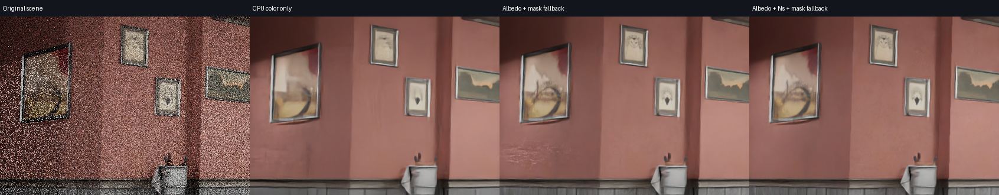
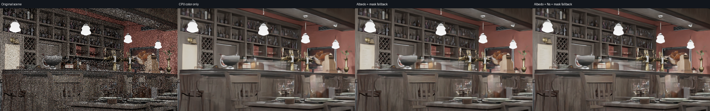
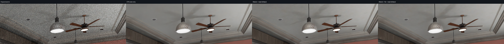
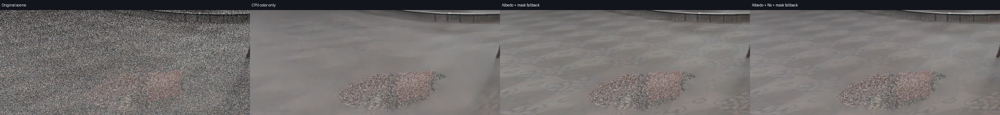

三个 OIDN 分支使用同一帧线性 HDR、固定 inputScale=1024；显示均为 EV10 / wide-C1 / sRGB。玻璃、水、发光面及不可靠像素保留同输入的颜色去噪结果。
引导非零写回 82.77% · 羽化后等效覆盖 70.94%。这是离线单帧对照。
原始PNG · 颜色去噪 · 材质引导 · 材质与法线引导 · 实际输入、覆盖与耗时
下面依次为原始、颜色去噪、材质引导、材质与法线引导，均为原尺寸像素；宽图可横向滚动。




整图网络仍会看到近似的玻璃、水域上下文；写回掩码不代表 CNN 上下文完全隔离。单帧不证明动态稳定，反射与透射中的细节仍有限。